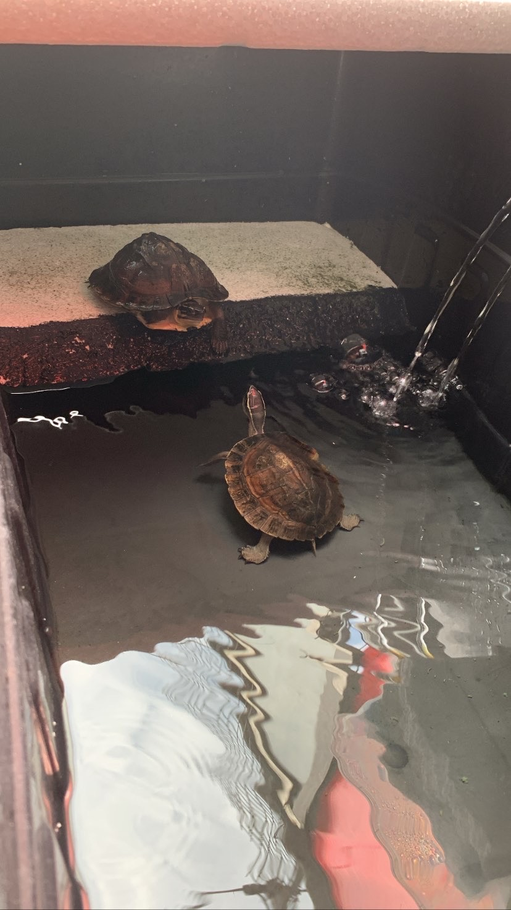
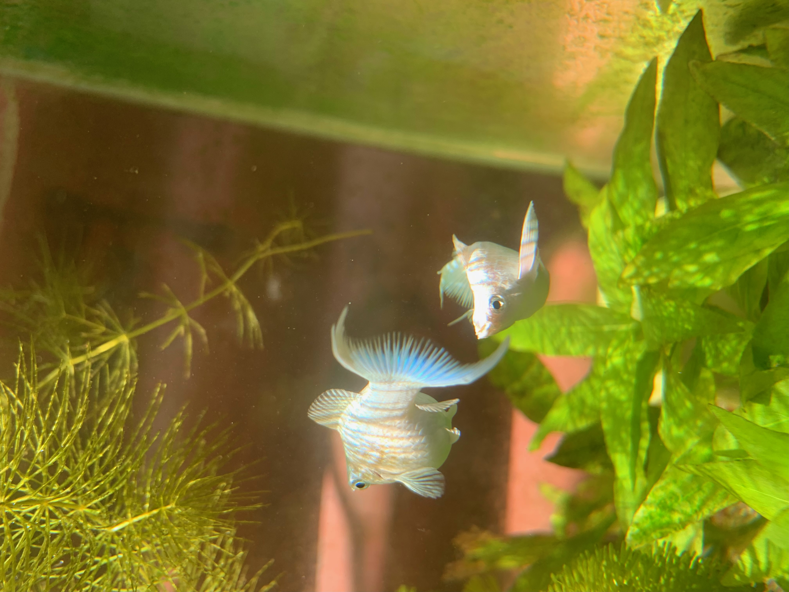
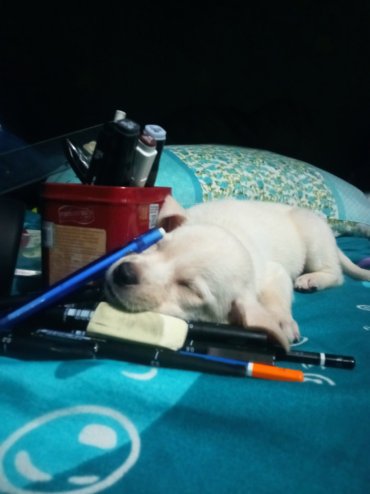
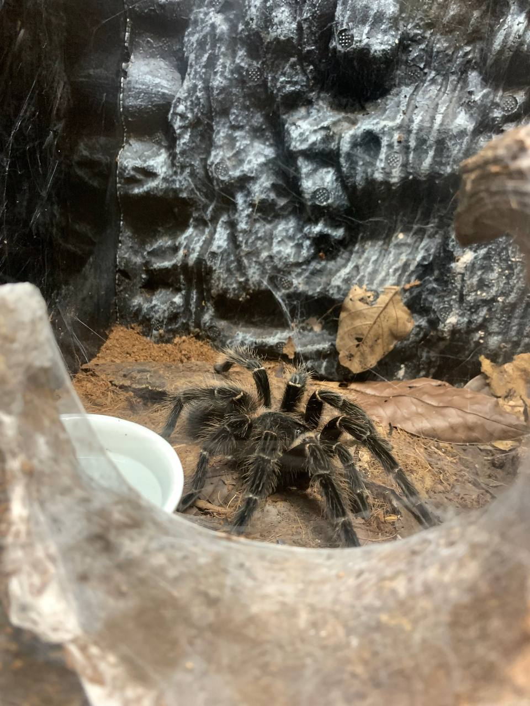
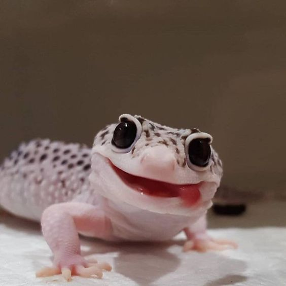

Twin Turtles
Dion, 12-10-22

Malayan Box Turtle, also known as the Common Box Turtle or the Eastern Box Turtle, is a
fascinating creature that is native to Southeast Asia. It is a small to medium-sized turtle that can
grow up to six to eight inches in length. Malayan Box Turtles are also popular as pets because of
their unique and interesting personalities.
Platinum King Balloon Molly
Dion, 2-13-22

The Platinum King Balloon Molly is a stunning and captivating fish that stands out with its
shimmering silver body and distinctive balloon-shaped abdomen. This unique variety
of Molly fish has become increasingly popular among aquarium enthusiasts due to its
striking appearance and peaceful nature.
Sofia, Shih Tzu: Your Loyal and Affectionate Canine Companiont
Dion, 10-13-22
Beyond their irresistible looks, Shih Tzus have a delightful personality.
They are known for their gentle and sweet disposition, often displaying
an endearing eagerness to please their human companions.
Whether you're looking for a cuddle buddy or a walking partner, the
Shih Tzu's amiable nature makes them a joy to be around.
Cute Sansa
Dion, 3-4-23

Imagine coming home to find your adorable puppy sprawled amidst a pile of drawing materials.
As surprising as it may be, this delightful scene showcases the innate curiosity and
playful nature of our furry friends. This artistic puppy has found a unique way to
express its creativity, blending cuteness with a touch of mischief.
Beneath the Veil: Unveiling the Enigmatic World of Tarantulas
Dion, 4-2-23

When it comes to unique and unconventional pets, tarantulas often take the spotlight.
These eight-legged wonders have captivated
the hearts of arachnid enthusiasts around the world. With their intriguing appearance a
nd mysterious nature, tarantulas make for fascinating and low-maintenance pets.
Geckos: Enigmatic Reptile Companions
Dion, 5-2-23

When it comes to unique and captivating pets, geckos stand out as
fascinating reptilian companions. With their distinct appearance and
intriguing behaviors, geckos have charmed reptile enthusiasts worldwide.
If you're looking for an extraordinary pet that offers a glimpse
into the world of lizards, a gecko might be the perfect choice.